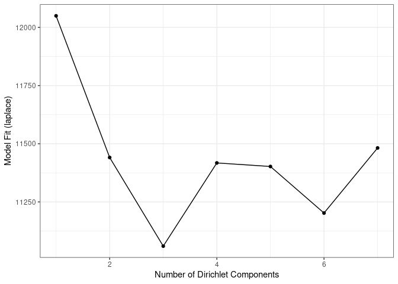

Dirichlet-Multinomial Mixtures
This section focus on DMM analysis.
One technique that allows to search for groups of samples that are similar to each other is the Dirichlet-Multinomial Mixture Model. In DMM, we first determine the number of clusters (k) that best fit the data (model evidence) using Laplace approximation. After fitting the model with k clusters, we obtain for each sample k probabilities that reflect the probability that a sample belongs to the given cluster.
Let’s cluster the data with DMM clustering.
# Runs model and calculates the most likely number of clusters from 1 to 7.
# For this small data, takes about 10 seconds. For larger data, can take much longer
# because this demands lots of resources.
tse_dmn <- runDMN(tse, name = "DMN", k = 1:7)
# It is stored in metadata
tse_dmn
## class: TreeSummarizedExperiment
## dim: 151 27
## metadata(1): DMN
## assays(3): counts relabundance clr
## rownames(151): 1726470 1726471 ... 17264756 17264757
## rowData names(6): Kingdom Phylum ... Family Genus
## colnames(27): A110 A12 ... A35 A38
## colData names(6): patient_status cohort ... Shannon_index Faith_diversity_index
## reducedDimNames(0):
## mainExpName: NULL
## altExpNames(0):
## rowLinks: a LinkDataFrame (151 rows)
## rowTree: 1 phylo tree(s) (151 leaves)
## colLinks: NULL
## colTree: NULL
Return information on metadata that the object contains.
names(metadata(tse_dmn))
## [1] "DMN"
This returns a list of DMN objects for a closer investigation.
## [[1]]
## class: DMN
## k: 1
## samples x taxa: 27 x 151
## Laplace: 12049.73 BIC: 12271.38 AIC: 12173.55
##
## [[2]]
## class: DMN
## k: 2
## samples x taxa: 27 x 151
## Laplace: 11440.94 BIC: 12161.29 AIC: 11964.97
##
## [[3]]
## class: DMN
## k: 3
## samples x taxa: 27 x 151
## Laplace: 11060.01 BIC: 12266.31 AIC: 11971.51
##
## [[4]]
## class: DMN
## k: 4
## samples x taxa: 27 x 151
## Laplace: 11417.28 BIC: 13047.39 AIC: 12654.11
##
## [[5]]
## class: DMN
## k: 5
## samples x taxa: 27 x 151
## Laplace: 11217.47 BIC: 13305.58 AIC: 12813.8
##
## [[6]]
## class: DMN
## k: 6
## samples x taxa: 27 x 151
## Laplace: 11202.17 BIC: 13718.9 AIC: 13128.65
##
## [[7]]
## class: DMN
## k: 7
## samples x taxa: 27 x 151
## Laplace: NaN BIC: NaN AIC: NaN
Show Laplace approximation (model evidence) for each model of the k models.
plotDMNFit(tse_dmn, type = "laplace")
## Warning: Removed 1 rows containing missing values (geom_point).
## Warning: Removed 1 row(s) containing missing values (geom_path).

Return the model that has the best fit.
getBestDMNFit(tse_dmn, type = "laplace")
## class: DMN
## k: 3
## samples x taxa: 27 x 151
## Laplace: 11060.01 BIC: 12266.31 AIC: 11971.51
PCoA for ASV-level data with Bray-Curtis; with DMM clusters shown with colors
Group samples and return DMNGroup object that contains a summary. Patient status is used for grouping.
dmn_group <- calculateDMNgroup(tse_dmn, variable = "patient_status",
exprs_values = "counts", k = 3)
dmn_group
## class: DMNGroup
## summary:
## k samples taxa NLE LogDet Laplace BIC AIC
## ADHD 3 13 151 6330.860 -52.57341 5886.457 6914.386 6785.860
## Control 3 14 151 6647.269 -148.36489 6154.970 7247.655 7102.269
Mixture weights (rough measure of the cluster size).
DirichletMultinomial::mixturewt(getBestDMNFit(tse_dmn))
## pi theta
## 1 0.4814815 31.27752
## 2 0.2962963 47.34420
## 3 0.2222222 92.27447
Samples-cluster assignment probabilities.
head(DirichletMultinomial::mixture(getBestDMNFit(tse_dmn)))
## [,1] [,2] [,3]
## A110 1.000000e+00 1.265615e-144 7.603914e-205
## A12 9.737008e-117 6.165744e-93 1.000000e+00
## A15 1.000000e+00 9.650972e-119 3.402198e-234
## A19 5.311949e-112 1.835098e-107 1.000000e+00
## A21 2.122941e-93 4.771671e-96 1.000000e+00
## A23 1.000000e+00 8.910671e-111 1.945894e-161
Contribution of samples to each component.
head(DirichletMultinomial::fitted(getBestDMNFit(tse_dmn)))
## [,1] [,2] [,3]
## 1726470 6.352191032 2.898811202 20.1895550
## 1726471 5.287825073 0.002048244 0.1532214
## 17264731 0.001248226 9.144320105 2.0112057
## 17264726 0.140477826 1.363524818 7.5894247
## 1726472 2.104206223 3.523313535 2.6657337
## 17264724 0.072367307 0.002048244 9.8546050
Get the assignment probabilities
prob <- DirichletMultinomial::mixture(getBestDMNFit(tse_dmn))
# Add column names
colnames(prob) <- c("comp1", "comp2", "comp3")
# For each row, finds column that has the highest value. Then extract the column
# names of highest values.
vec <- colnames(prob)[max.col(prob,ties.method = "first")]
# Creates a data frame that contains principal coordinates and DMM information
euclidean_dmm_pcoa_df <- cbind(euclidean_pcoa_df,
dmm_component = vec)
# Creates a plot
euclidean_dmm_plot <- ggplot(data = euclidean_dmm_pcoa_df,
aes(x=pcoa1, y=pcoa2,
color = dmm_component)) +
geom_point() +
labs(x = "Coordinate 1",
y = "Coordinate 2",
title = "PCoA with Aitchison distances") +
theme(title = element_text(size = 12)) # makes titles smaller
euclidean_dmm_plot